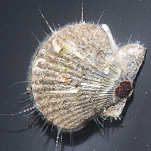
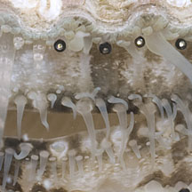
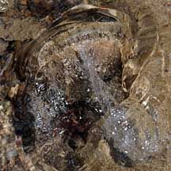

|
|
| bivalves text index | photo index |
| Phylum Mollusca > Class Bivalvia |
| Scallops Family Pectinidae updated May 2020 Where seen? These little clams are sometimes seen on some of ours shores, on sandy areas near seagrasses. Features: 4-7cm.The circular two-part shell is thick with ribs and a squarish portion at the hinge. It has a hinge with a socket-like arrangement between the valves. A single, fused adductor muscle controls the valves (this is the part that is eaten in seafood, see below). The foot is greatly reduced and there is usually no siphon. They have a fringe of tentacles, some long and many short tentacles, with many tiny, well developed eyes along the mantle edge. |
 Changi, Jul 12 |
 When submerged, tentacles and tiny eyes can be seen. |
 'Swimming' backwards with clap of valves |
| Swimming scallops: Some scallops are free living. A scallop can swim by flapping its
valves and using jet propulsion. It sucks in water and then forces
out a jet of water from either sides of the shell hinge. A scallop
can change the direction of its movement by using the velum. The velum
is a curtain-like fold of the mantle that works like lips to direct
the jet of water and thus control its movement. Stick-on scallops: Some scallops such as the Chlamys species, attach themselves to stones, rocks and other hard surfaces with byssus threads. Tiny coral scallops are often embedded in living hard corals. What do they eat? Like most other bivalves, scallops are filter feeders. When submerged, a scallop opens its valves slightly and sucks in a current of water. It uses its enlarged gills to sieve food particles out of this current. |
 Scallop in a living coral. Tanah Merah, Jun 11 |
 Scallop in a living coral. Pulau Berkas, Jan 10 |
 Scallop stuck on a living Window-pane clam. Changi, May 08 |
| Human uses: Larger scallop species
are harvested for seafood. Usually what is eaten is only the adductor
muscle that holds the two valves together. Our wild scallops are much
too small to yield the kind of scallops you can buy at the supermarket.
The flesh of the adductor muscle is sweet because it contains a high
amount of gylcogen. Like other filter-feeding clams, however, scallops
may be affected by red
tide and other harmful algal blooms when they are then harmful
to eat. Status and threats: None of our scallops are listed among the threatened animals of Singapore. However, like other creatures of the intertidal zone, they are affected by human activities such as reclamation and pollution. Trampling by careless visitors and over-collection can also affect local populations. |
| Some Scallops on Singapore shores |
*Species are difficult to positively identify without close examination.
On this website, they are grouped by external features for convenience of display.
| Family
Pectinidae recorded for Singapore from Tan Siong Kiat and Henrietta P. M. Woo, 2010 Preliminary Checklist of The Molluscs of Singapore. ^from WORMS +Other additions (Singapore Biodiversity Record, etc)
|
Links
|